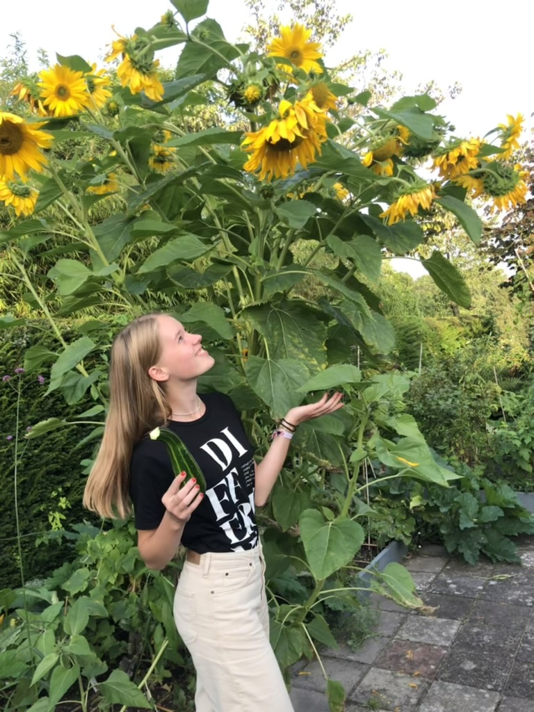

About
During the Summer term of 2024 at University College Utrecht, I took a Lab Course in Geographical Information Systems (GIS) at the Copernicus Institute of Sustainable Development, taught by Dr. Britta Ricker. In this course, I learned how to process spatial data, execute spatial analysis for decision-making, and apply the principles of carthography to real-life scenarios. Most of the projects I worked on were related to nature conservation and landscape management. Currently, my interests lie in nature conservation, specifically focusing on the Utrechtse Heuvelrug.
Geographical Information Systems
 Geographic Information Systems (GIS) is a framework for gathering, managing, and analyzing spatial and geographical data. It combines various types of data and uses spatial location to provide a visual representation of the data in maps. These geographical data can address real-world problems, for instance those related to climate change, agriculture and public health, and improve understanding of spatial relationships.
Geographic Information Systems (GIS) is a framework for gathering, managing, and analyzing spatial and geographical data. It combines various types of data and uses spatial location to provide a visual representation of the data in maps. These geographical data can address real-world problems, for instance those related to climate change, agriculture and public health, and improve understanding of spatial relationships.
About me
Last summer, I started studying at University College Utrecht (UCU). I am very passionate about the environment and nature conservation, while also fostering a love for documentary making and videography. UCU allows me to combine all of these interests. I am majoring in Environmental Sciences and Physiology, with a minor in Media Studies. Additionally, as a member of the youth committee of National Park Utrechtse Heuvelrug (NPUH), I have a specific interest in this unique natural area of the Netherlands to gain insights and inspiration for our initiatives. Twice a year, students at UCU are given the opportunity to take a lab course. One of these, Geographical Information Systems, introduced me to a whole new field with many opportunities to study matters like climate change. Using ArcGIS, GQIS, Google Earth Engine and ESRI online, I worked on several projects. It was really exciting to gain knowledge in this field and become familiar with widely used Geograhical Information System software.
ESRI Technical Certification
-
ArcGIS Pro Basics_Certificate
Getting Sterted with Spatial Analysis_Certificate
Performing Supervised Pixel-Based Image Classification_Certificate